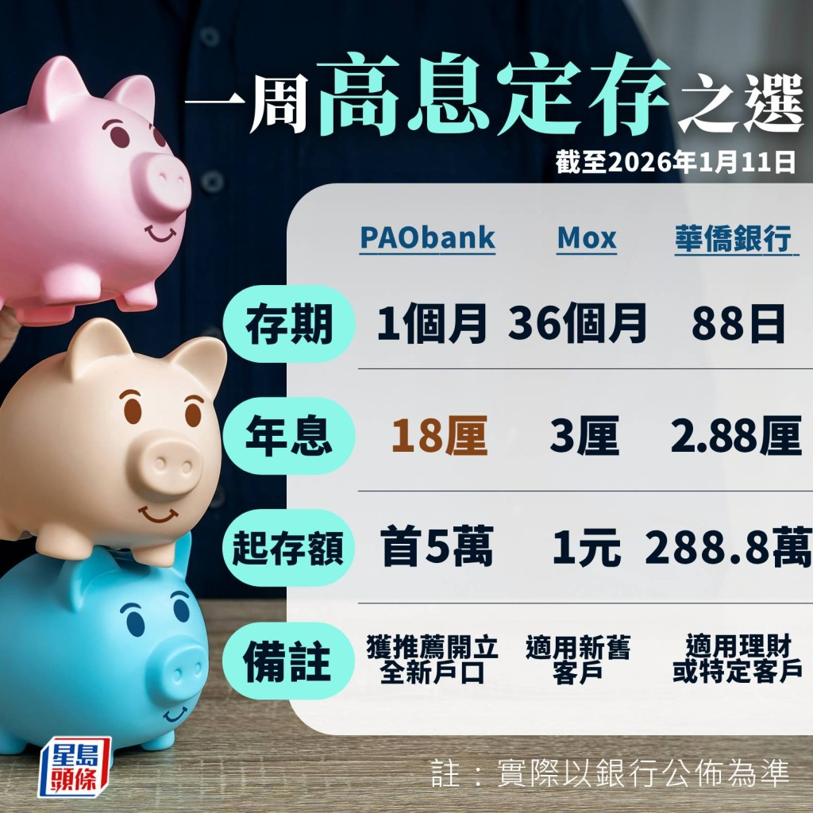

【定期存款/定存/高息定存】多間銀行自踏入2026年後紛下調港元定存息率，其中包括龍頭行滙豐下調6個月息率至2.1厘；不過，上周亦見部份銀行息率逆市回升，例如天星銀行、信銀國際及建行亞洲等。以3個月存期為例，PAObank最高息率仍有近3厘。此外，華僑銀行亦推出了「新年優惠」，除了適用於該行零售銀行宏富理財客戶之外，若香港身份證號碼、護照號碼或出生日期含有一個數字的客戶亦可適用。
定期存款利率比較｜哪間銀行定存利息高？
．PAObank新客最高18厘息
PAObank目前3個月港元定存息率維持2.9厘，6個月及12個月分別降至2.7厘及2.6厘，起存額為100元，且不限新舊資金；美元定存方面，該行3、6及12個月息率劃一為2.9厘。
此外，該行全新個人客戶開戶可獲高息優惠，由即日起至1月31日，合資格個人客戶開立PAObank個人儲蓄戶口，並敘造1個月港元定存，首5萬元可享16厘高息優惠。
同時，現有客戶在1月31日前給予親友推薦碼，被推薦人成功開立全新個人戶口，首5萬元定存即享1個月18厘優惠，即速賺750元。另外，被推薦人成功開戶並敍造5萬元或以上定期存款，推薦人亦可即獲500元現金獎賞，上限5,000元現金獎賞，而活動期間推薦最多新客戶的首三名推薦人，更可分別額外獲得3,000元、2,000元及1,000元現金獎賞。
．Mox定存36個月有3厘
Mox Bank的3個月港元定存息率降至2.4厘，6個月維持2.4厘，12個月則為2.6厘，起存額最低1元。此外，該行為市場上罕有提供36個月及48個月港元定存的銀行，息率分別為3厘及2.9厘。
美元定存方面，該行1個月期為3.3厘，2及3個月息率均為3.3厘，6及12個月則分別為3.25厘及3.1厘。

一周高息定存
．華僑銀行「新年優惠」最高2.88厘
OCBC華僑銀行推出「新年定期存款優惠」，以象徵幸運的「8」字為主題，帶來多款定存選擇。港元定存之中，38日存款期最高2.6厘，起存額88.8萬元；28.8萬或以上為2.38厘；88.8萬或以上為2.6厘。88日存款期方面，起存額達8.8萬或以上為2.28厘；28.8萬或以上為2.38厘；88.8萬或以上為2.8厘；而288.8萬或以上更有2.88厘。
188日存款期方面，存額達8.8萬或以上為2.38厘；28.8萬或以上為2.5厘；88.8萬或以上為2.68厘；而288.8萬或以上則有2.88厘。388日存款期方面，存額達8.8萬或以上為2.18厘；28.8萬或以上為2.28厘；88.8萬或以上為2.5厘。
美元定存之中，38日存款期最高3.38厘，起存額18萬美元；3.8萬或以上則為3.28厘。88日存款期方面，息率最高3.8厘，起存額18萬美元；3.8萬或以上則為3.38厘。188日存款期方面，存額達18萬美元或以上為3.6厘；3.8萬或以上則為3.5厘。388日存款期方面，存額達18萬美元或以上為3.38厘；3.8萬或以上亦同樣是3.38厘。
以上優惠至1月31日，適用於零售銀行宏富理財客戶；若非宏富理財客戶，其香港身份證號碼、護照號碼或出生日期含有數字「8」的客戶，亦可適用。
．天星銀行12個月上調至2.85厘
天星銀行3個月、4個月及6個月港元定存息率均見上調，分別為2.6厘、2.6厘及2.7厘，9個月及12個月則分別為2.7及2.85厘，起存額為1,000元。美元定存方面，該行3個月及4個月均為3.05厘，6個月及9個月為3.05厘，12個月則為3.1厘。
．富邦3、4及6個月2.8厘
富邦銀行3個月港元定存息率2.8厘，4個月及6個月亦為2.8厘，1個月、2個月為2.5厘，12個月則為2.6厘，起存額50萬元，不論新舊資金，需經Fubon+手機應用程式申請。
至於該行3個月美元定存息率為3.7厘，1個月及2個月分別為3.5厘及3.65厘，4個月、6個月及12個月則為3.5厘、3.45厘及3.4厘，起存額為65,000美元或以上。
．工銀亞洲98天降至2.8厘
在工銀亞洲開立或持有工銀財富或理財金賬戶，並以全新資金到分行開立港元定存，98天降至2.8厘，188天維持2.5厘，存款額需80萬元或以上；若為零售銀行個人客戶，存款額為5萬元以上，98天及188天分別為2.75厘及2.45厘。美元定存方面，該行98天或188天最高3.45厘及3.4厘，起存額10萬美元或以上；若起存額15,000美元或以上，息率分別降至3.4厘及3.35厘。
此外，該行全新工銀財富客戶，若以300萬元或以上到分行開立3個月港元定存，最高息率降至2.85厘；至於全新理財金、理財e時代或綜合客戶，3個月最高2.8厘，起存額為10萬元或以上。
．信銀國際3個月上調至2.75厘
中信銀行（國際）新舊客戶經「inMotion動感銀行」開立港元定存新資金，3個月期息率上調至2.75厘，6個月及12個月分別為2.4厘及1.8厘，起存額為10萬元新資金。若起存額為1萬元，3、6及12個月息率，則分別為2.65厘、2.3厘及1.75厘。
美元定存方面，3個月及6個月期息率最高3.45厘及3.35厘，12個月則為3.15厘，起存額為1萬美元新資金。
．建行亞洲3個月上調至2.7厘
建行亞洲客戶以合資格新資金開立3個月定存，息率上調至2.7厘，起存額需100萬元或以上。美元定存方面，3個月息率為3.55厘，起存額需10萬美元或以上。
至於新客戶開立「貴賓理財」帳戶，以100萬至250萬元開立3個月港元定存，當中首20%資金年利率為6.88厘，其餘80%資金需以另一定期存款利率作計算，優惠期至3月31日。
此外，該行全新合資格客戶透過｢e賬戶服務｣開戶，可享200元人民幣現金獎賞，若同時開立證券戶口，可以10萬元承做12厘的港元1個月定存，或以10萬元承做5.88厘的港元3個月定存；若僅開立一般儲蓄或支票戶口，則只可以5萬元承做12厘的港元1個月定存，或以5萬元承做5.88厘的港元3個月定存。優惠期至3月31日。
．WeLab Bank特選客最高2.7厘
WeLab Bank港元定存3、6及12個月均為2.5厘。此外，該行提供18及24個月超長期定存，息率則為2.25厘，起存額為10元。不過，該行近日推出特選客戶定存年利率，特選客戶可在WeLab Bank App內查看，最高達2.7厘。
美元定存方面，1個月3厘年利率，3、6及12個月分別為3.3厘、3.3厘及2厘，起存額10美元。
．集友銀行3個月2.65厘
集友銀行3個月港元定存2.65厘，4個月為2.55厘，6個月及12個月則為2.45厘及2厘，起存額為100萬至5,000萬元新資金；若起存額為20萬至100萬元以下，3、4、6及12個月定存息率，分別為2.45厘、2.35厘、2.15厘及1.8厘，上述優惠只適用於分行。
美元定存方面，3、6及12個月定存息率分別為3.55厘、3.3厘及2.8厘，起存額為12.5萬至1,000萬美元新資金；若起存額為3萬至12.5萬美元，3、6及12個月定存息率，分別為3.25厘、3.1厘及2.7厘，同樣只適用於分行。
．花旗銀行1個月2.56厘
花旗銀行現有客戶1個月港元定存2.56厘，不設最高或最低存款額限制，2、3、6及12個月期息率分別為2.05、2.06、1.98及1.87厘。美元定存方面，1個月期最高3.08厘，2、3、6及12個月期息率分別為3.07厘、3.05厘、2.97厘及2.79厘。惟以上年利率僅為參考，每日或有浮動。
．大新3個月降至2.5厘
大新銀行VIP客戶3個月及6個月港元定存息率分別降至2.5厘及2.4厘，12個月期為2.2厘，起存額需20萬元；一般客戶方面，3個月及6個月期最高2.4厘及2.3厘，12個月則為2.1厘，但起存額需100萬元；若起存額20萬元至100萬元以下，各存期均低0.1厘。
美元定存方面，VIP客戶3個月及6個月最高3.4厘及3.3厘，起存額為等值港元100萬或以上；一般客戶方面，3個月及6個月期最高3.1厘及3厘，起存額亦需100萬元。
．南商3個月定存降至2.5厘
南洋商業銀行港元定存3個月息率最高2.5厘，起存額100萬元，但需為特選理財客戶；若為一般理財客戶，息率為2.4厘。至於6及12個月最高息率則為2.4厘及2.3厘，同樣屬特選理財客戶優惠；若為一般理財客戶，息率為2.3厘及2.2厘。其他客戶方面，3個月最高2.3厘，起存額10萬元，6及12個月息率則為2.2厘及2.1厘。
若為美元定存的話，特選理財客戶3個月最高3.55厘，6個月及12個月分別為3.5厘及3.25厘；若為一般客戶，3、6、12個月期分別為3.45厘、3.4厘及3.15厘，起存額為等值10萬港元。
．富融銀行3個月降至2.5厘
富融銀行（Fusion Bank）現有客戶3個月港元定存息率降至2.5厘；6個月及12個月定存息率則為2.4厘，起存額為1元。美元定存方面，該行3、6及12個月息率，分別為3.6厘、3.5厘及3.3厘。
此外，該行富融銀行（Fusion Bank）在「快閃星期一」活動推出年利率高達25厘港元定存優惠。該行新客戶於2月8日前用邀請碼「FLASH2026」開戶，並存入新資金，可於星期一搶25厘的14天港元定存優惠，名額1,500份；每份額度為5萬元，每位客戶限搶一份。同時，該行亦提供1個月5厘及12個月的2.8厘優惠，名額分別有40份及1,000份，每位客戶可搶1份及60份，適用於新客戶及現有客戶。
．Livi Bank定存3個月2.5厘
Livi Bank港元定存息率3個月2.5厘，4個月維持2.5厘，6個月為2.3厘 ，9個月及12個月則為2厘，起存額5萬元或以上；若起存額為500至5萬元以下，3個月及4個月分別為1.1及1.2厘 、6個月及9個月1.3厘，12個月則為1.6厘。
美元定存方面，3、6及12個月息率分別為3.5厘、3.4厘及3.2厘。
．螞蟻銀行6個月2.5厘
螞蟻銀行港元1個月定存為2厘，3個月2.3厘，6個月2.5厘，9個月及12個月則為2.3厘，起存額為1元新資金。美元定存方面，1個月息率為3.8厘，3、6、9及12個月息率一律為3厘。
．大眾銀行3及6個月2.45厘
大眾銀行港元定存3個月為2.45厘，6個月為2.45厘，12個月期則為2.3厘，起存額為50萬元，適用於新舊資金，並需以電子銀行辦理。若起存額為10萬至50萬元以下，3個月及6個月為2.4厘，12個月息率為2.25厘；起存額為1萬至10萬元以下的話，3個月、6個月及12個月則分別為2.35厘、2.35厘及2.2厘。
．東亞銀行3個月降至2.4厘
東亞銀行網上3個月及6個月港元定存息率分別為2.4厘及2.25厘，起存額1萬元新資金，適用於顯卓私人理財或顯卓理財客戶；而至尊理財客戶、BEA GOAL或其他個人綜合戶口則分別最高2.35及2.2厘。12個月期方面，顯卓私人理財或顯卓理財客戶最高2厘，至尊理財客戶、BEA GOAL或其他個人綜合戶口則為1.95厘。
美元定存方面，3個月及6個月分別為3.4及3.2厘，12個月則為2.9厘，適用於顯卓私人理財或顯卓理財客戶；若為至尊理財客戶、BEA GOAL或其他個人綜合戶口，3、6及12個月息率分別為3.35厘、3.15厘及2.85厘。以上起存額需為1,000美元或以上。
．滙豐3個月2.4厘
滙豐3個月港元定存息率2.4厘，6個月則降至2.1厘，適於用理財客戶、HSBC One及其他客戶，起存額為1萬元新資金。美元定存方面，滙豐理財客戶3個月及6個月期美元定存息率分別為3.3厘及3.2厘，12個月期則為3厘；HSBC One及其他客戶則分別有3.1厘、3厘及2.8厘，起存額為2,000美元或以上新資金。
此外，滙豐繼續提供1個月港元定存最高10厘的優惠，起存額為10,000元，但需要加入「交易薈」，並每月至少需完成一項交易。值得留意的是，若每月交易金額越多，經紀佣金將越少、10厘息定存上限亦會越高，其中每月交易金額要求由1元至4,000萬元不等，佣金由0.01%至0.25%，定存上限則由1萬元至最高400萬元。
．恒生3個月2.4厘
恒生銀行3個月定存息率2.4厘，6個月則降至2.1厘，需透過網上理財開立，適用於優越私人理財、優越理財、優進理財或綜合戶口，起存額同為1萬元新資金。至於該行美元定期存款3個月及6個月期，息率分別為3.5厘及3.3厘，起存額美元2,000或以上。
．中銀3個月2.4厘
中銀香港3個月定存息率2.4厘，6個月則為2.2厘，起存額1萬元，需透過網上理財或手機銀行開立，除了適用於私人財富、中銀理財客戶外，亦適用於智盈理財、自在理財及其他個人客戶。
美元定期存款方面，私人財富及中銀理財客戶可享3個月定存息率3.3厘，6個月定存則為3.2厘；若為智盈理財、自在理財及其他個人客戶，息率低0.2厘，起存額為1,000美元。
．渣打3個月2.3厘
渣打銀行一般3個月定存息率2.3厘，6個月及12個月期分別為2.1厘及2.2厘，起存額為1萬元新資金。至於該行美元定存3個月及6個月期為3.2厘，12個月則為2.9厘，起存額為2,000美元或以上新資金。
．ZA Bank定存12個月2.01厘
ZA Bank港元定存3個月為0.51厘、4個月為0.61厘，而6及12個月息率分別為1.61厘及2.01厘；美元定存方面，4個月定存息率有3.11厘。
此外，該行設有「加息星期二」活動，用戶於每周二可領取4張存款加息券，連同基礎年利率0.1厘，最高可達9厘年利率；若用戶邀請好友完成指定操作，而好友幫手進度在周二當天達到100%，再可獲得「額外加息券」，最終加碼後可獲最高18厘息率。不過，加息券存款上限、下限、存期、利率和有效期，均以加息券上顯示內容為準，推廣期至3月31日。
以下為聯儲局2026年議息時間表：
| 2026年 | 1月28日 |
| 3月18日 |
| 4月29日 |
| 6月17日 |
| 7月29日 |
| 9月16日 |
| 10月28日 |
| 12月9日 |